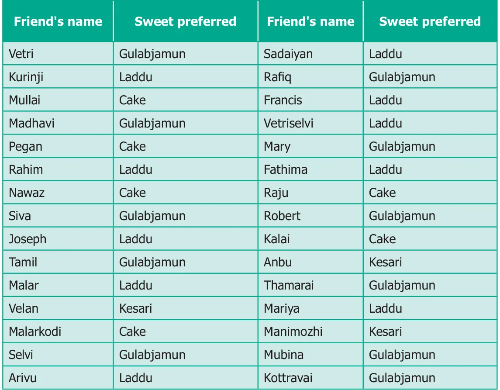
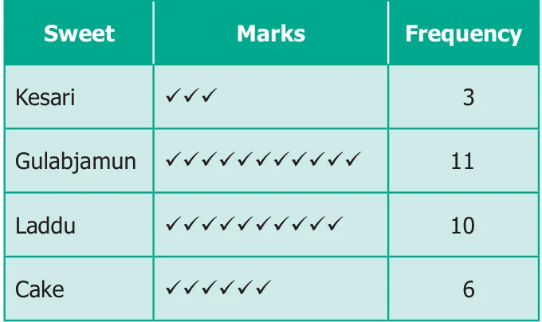
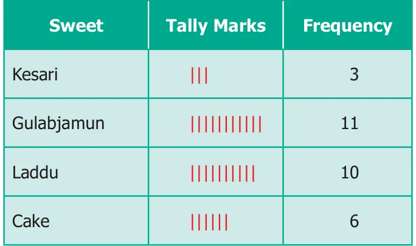
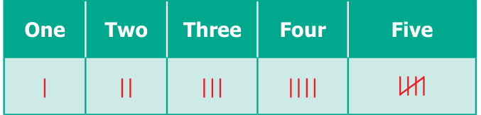
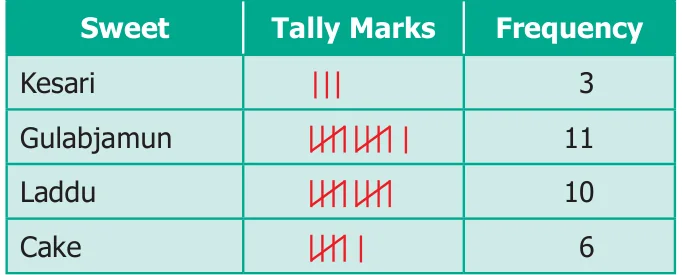

5.2 Data
In our daily life, we come across many situations where we need to collect information in the form of Facts or Numbers.
Do You Know?
The word 'data' was first used in 1640's. In 1946, the word 'data' also meant for "transmittable and storable computer information". In 1954, a term called 'data processing' was introduced. The plural form of 'datum' is 'data'. It also means "given" or "to give" in Latin.
For example,
- Number of students using calculators in your class.
- Number of brothers and sisters in your family.
- Number of different types of houses in a village.
- Number of girls wearing bangles.
- Number of buses crossing a certain road junction at a particular time.
- Number of persons in a street who watch T.V. for more than 2 hours a day.
- Number of shops in a shopping mall selling textiles.
- Speeds of bikes, cars and other vehicles passed along a specific highway.
Thus, the numerical information or facts collected are known as Data.
5.2.1 Collection of data
Santhi collected the following information about her friend's preference of sweets which is as shown below.

This way of collecting the data helps Santhi to decide, what sweets to get for her birthday and how much for each.
Try These
- Tabulate different kinds of crops cultivated by the farmers in a village
- List out different kinds of plants/trees in your school campus
Activity
Collect the data of the birth months of your classmates.
5.2.2 Types of Data
On the basis of collection, data are of two types. They are primary data and secondary data.
Primary data
Activity
Collect data on the level of literacy of people in your street.
Primary data means the raw data (not tailored data) which has just been collected from the original source and has not gone any kind of statistical treatment like sorting and tabulation.
Examples
- List of absentees in the class.
- A survey on writing habits of students conducted by a pen manufacturing company.
- The types of leaves collected by students for studying nature.
Secondary Data
Secondary data consists of second hand information which has already been collected. It could have been collected by someone other than the user, for some other purpose.
Examples
- The Headmaster collects the students' absentee list from school office.
- Cricket scores gathered from a website.
- Data from Television and Newspapers.
- List of contact numbers from telephone directory.
Do You Know?
Primary data is collected in person and so more reliable than Secondary data.
5.2.3 Organizing Data
The collected data are to be arranged methodically or logically so that the information can be looked up fast whenever needed, easily and efficiently. The method of organizing the data is discussed as follows.
Tally Marks
Consider the data collected by Santhi (given in Table). Is it easy to get the required information from the data? For example, can any one quickly tell the number of people who do not like Laddu? No. So she decides to organize the data (See Fig. 5.2).
Her friends come to help her. Malar arranges the data as given below in the table. She uses '✓' marks to note down how many friends like each of the sweets. The count of each sweet is called as "Frequency".

But, Rahim arranges the data as shown below.

Both have done well. But one would prefer tally marks as they are very simple.

As in the above table, the teacher arranges the data as follows:

The standard form of representing the data is obtained by using 'Tally marks'.
Note
- The occurrence of each information is marked by a vertical line '|'.
- Every fifth tally is recorded by striking through the previous four vertical lines as ''.
- This makes counting up the tallies easy.
Example 5.1
Thamarai is fond of reading books. The number of pages read by her on each day during the last 40 days are given below. Make a Tally Marks table.
1 3 5 6 6 3 5 4 1 6 2 5 3 4 1 6 6 5 5 1
1 2 3 2 5 2 4 1 6 2 5 5 6 5 5 3 5 2 5 1
Solution
The Tally marks table is given below.

Think
If someone asks, “typically, how many pages does Thamarai read in one day?”, what will be your answer?